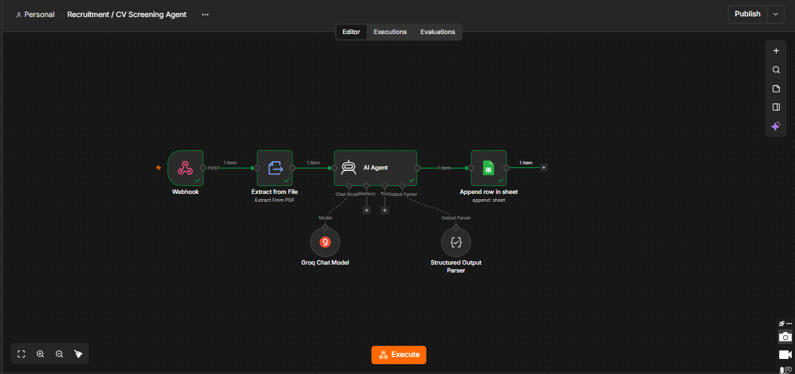
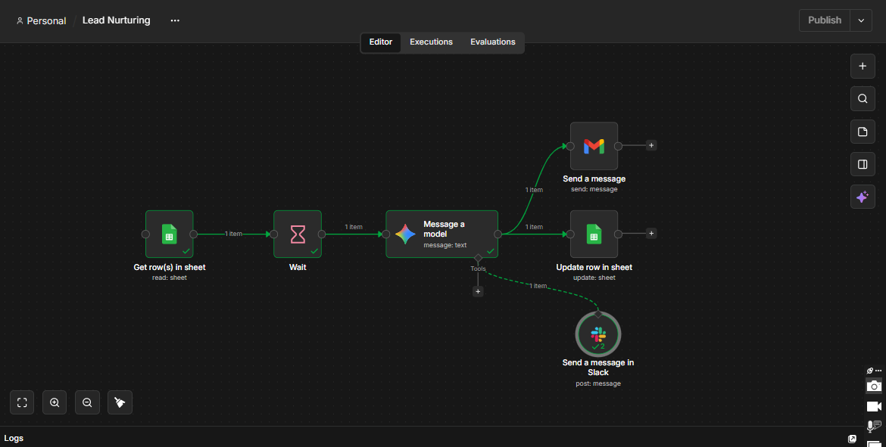
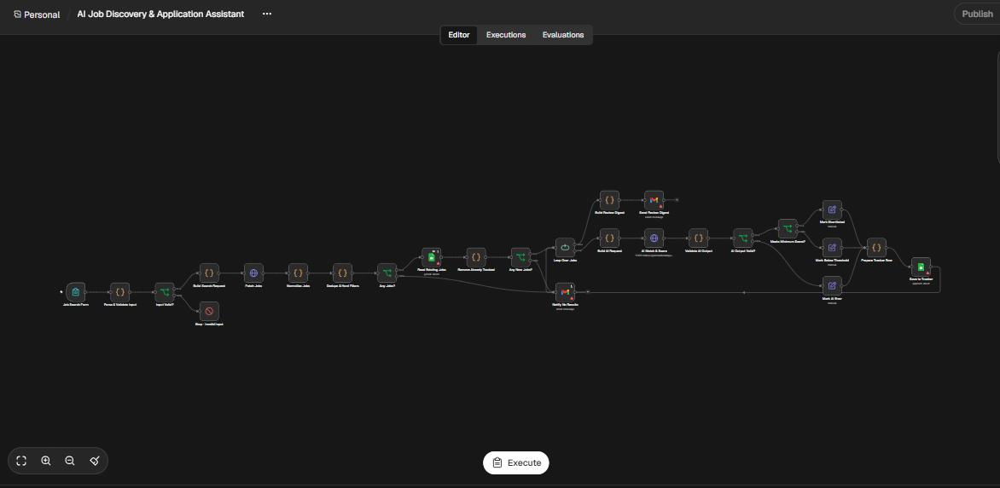

I build AI workflows that take repetitive work off a business.
AI automation developer with 3+ years in B2B sales. I design n8n workflows and AI agents for support, lead follow-up, recruitment and operations.
Selected work
Seven recent workflows, each with the real n8n build and a short case study.
 Sales · Lead generation
Sales · Lead generationClient Hunter Automation
Enter a niche and a city, and the workflow finds local businesses, checks their websites and saves AI-scored leads to Google Sheets.
- n8n
- Form trigger
- Apify
- AI analysis

HR · RecruitmentRecruitment / CV Screening Agent
A candidate uploads a CV on a portal; AI reads it, makes a decision and saves the result to Google Sheets.
- n8n
- Webhook
- Extract from File
- AI Agent
 Customer support · Healthcare
Customer support · HealthcareAppointment Booking Agent (Dental Clinic)
A chat agent named Hannah checks Google Calendar and books dental appointments in a normal conversation.
- n8n
- AI Agent
- Groq
- Simple Memory
 Marketing · Content
Marketing · ContentSocial Media Manager
Add an idea to a Google Sheet; AI writes the post and image, you approve in Slack, and it publishes to LinkedIn.
- n8n
- Google Sheets
- Gemini
- Google Drive

Sales · Follow-upLead Nurturing
Reads new leads from Google Sheets, sends a personal AI email with response buttons, and alerts the team on Slack about high-value leads.
- n8n
- Google Sheets
- Gemini
- Gmail
 Customer support · E-commerce
Customer support · E-commerceE-commerce Store Agent (Daraz)
A chat agent for an online store that looks up customers and orders and can cancel an order after the customer confirms.
- n8n
- AI Agent
- Groq
- Simple Memory

Productivity · Job searchAI Job Discovery & Application Assistant
A form-driven workflow that finds jobs, removes ones you already saw, scores the rest with AI and saves them to a tracker.
- n8n
- Form trigger
- HTTP Request
- AI scoring
Earlier projects
- Customer support · Orders
AI-Powered Customer Support & Order Management
A chat agent that shows the menu with live stock, answers FAQs and records orders in Google Sheets.
- Sales · Lead handling
AI Lead Qualification
Enquiry form to Google Sheets to a personalised AI reply with response buttons, sent by Gmail.
- Operations · Inventory
Medical Store Inventory Management
A chat assistant that answers stock, manufacturer and prescription questions from an Airtable inventory.
- Customer support · Automotive
Car Showroom Customer Support Agent
A chat agent that answers buyer questions and can look up vehicles in a Google Sheet.
- IT operations · Monitoring
Website Downgrade and Upgrade Manager
A scheduled check that emails the website's up or down status through Gmail.
- Email automation
Auto Email Reply System
Sorts incoming emails into orders and inquiries and saves AI-written replies as drafts.
What I can build
Every project started with a problem a business owner deals with every day.
Customer support agents
Chat agents that answer questions, take orders and cancel them, using your own data.
See an example →Lead generation and follow-up
Find prospects, reply to every enquiry in minutes and alert your team on Slack.
See an example →Recruitment screening
Read each CV, compare it with the role and save a decision with reasons.
See an example →Appointment booking
A chat agent that checks your calendar and books the slot.
See an example →Content and social media
Draft posts and images, approve in Slack, publish to LinkedIn.
See an example →Job search assistant
Find jobs, drop duplicates, score matches with AI.
See an example →
How I work
Understand the task
Who asks, what they ask and where the information lives.
Build the workflow
n8n plus AI models, connected to Gmail, Sheets, Calendar, Slack or Airtable.
Test with real examples
I fix what breaks before it reaches your customers.
Hand it over
You get the working workflow, a walkthrough and the workflow file.
About
I am a Bachelor of Software Engineering student at Nazeer Hussain University, Karachi, graduating in 2027. I came to automation from sales: three years in B2B and software sales taught me where businesses lose time and orders.
Tools
- n8n
- Gemini
- Groq
- OpenAI
- Gmail
- Google Sheets
- Calendar
- Slack
- Airtable
- Python
- Git
Experience
- International Business Development Executive, A2B Car Hub Japan, 2026 to present
- Sales Executive, Techhood, 2024 to 2025
- Salesman, Al Majid Motorsports, 2023 to 2024
Certificates
- AI in the Real World
- Hack the Python Matrix
- Cybersecurity Careers